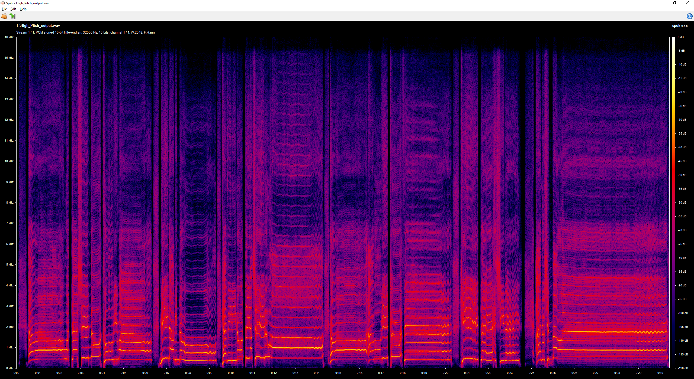
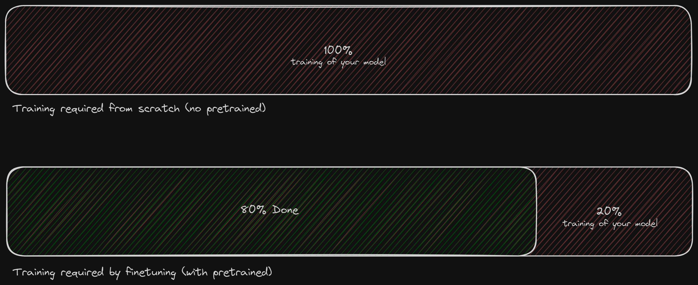
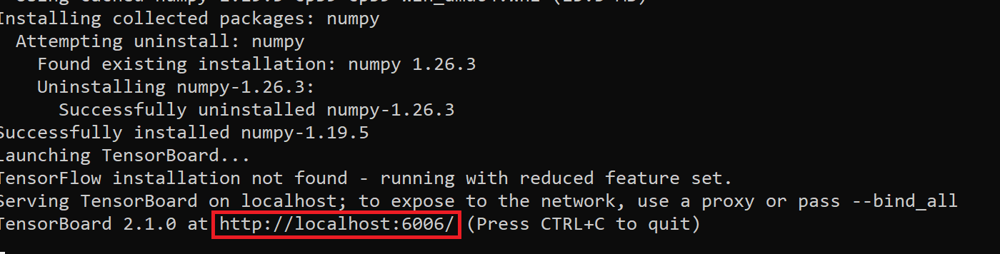
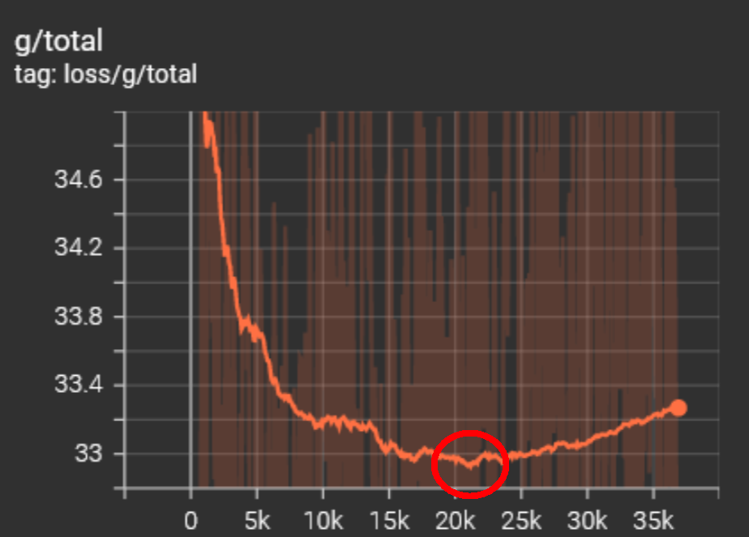
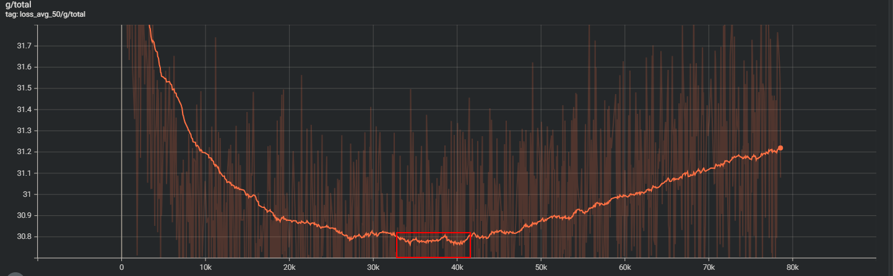
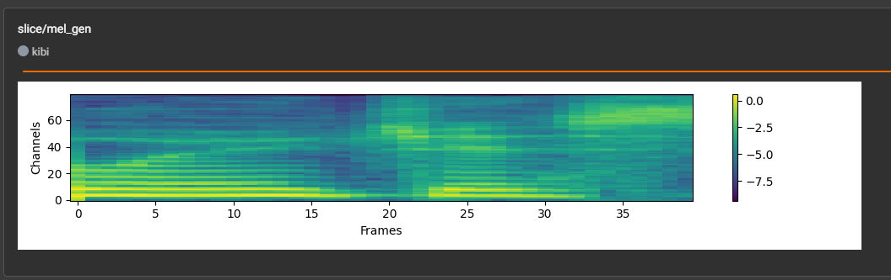

#
Training
Last update: May 5, 2025
#
Introduction
In this guide it will be explained how to properly train a model from start to finish.
Properly training a model is just as important as having a great dataset.
It won't be explained how to prosess a dataset and how to acutally train a model since that is difference from fork to fork, please look at the guide for your fork to find this info.
#
Epochs & Overtraining
"Epoch" is a unit of measuring the training cycles of an AI model.
In other words, the amount of times the model went over its dataset and learned from it.
#
How many epochs should I use for my dataset?
There isn't a way to know the right amount previous to training. It depends on the length, quality and diversity of the dataset.
If you aim towards a quality model, it's not convenient to input a semi-arbitrary amount of epochs, as it makes it prone to underfitting/overtraining. (explained later)
So it's best to use TensorBoard. With it you can determine exactly for how long you should train. (explained later)
#
Do more epochs equal a better model?
No it doesn't, since using a disproportionate amount will overtrain the model, which will affect the quality of it.
In the field of AI, is when an AI model learns its dataset too well, to the point where it centers too much around it & starts replicating undesired data.
The model performs very well with data of the dataset, but poorly with new data, as it has lost its ability to replicate anything that deviates from it.
It happens when the model is trained for too long/is too complex. So to avoid this, RVC users use a tool called TensorBoard.
#
What is overtraining?
Overtraining also know as overfitting is where the model doesn't actually learn the underlying patterns of the data and memorizes them instead.
Some signs of overfitting are when the sibilances are robotic, when the graphs in the Tensorboard are going up or when the model is unable to produce high end harmonics because it's learning your dataset to well and your dataset doesn't have these high end harmonics.

This image is a bit extreme but it gives you a good idea. If you notice your model is poorly creating high end harmonics try using a model several epochs back.
#
Batch Size
A batch size is the number of training examples used in one iteration before updaing the model's parameters. For 30+ minutes of data batch size 8 is recommended and for less than 30 minutes batch size 4 is recommended.
- Smaller batch size:
- Promotes noisier, less stable gradients.
- More suitable when your dataset is small, less diverse or repetitive.
- Can lead to instability / divergence or noisy graphs.
- Generalization might be improved.
- Bigger batch size:
- Promotes smoother, more stable gradients.
- Can beneficial in cases where your dataset is big and diverse.
- Can lead to early overtraining or flat / 'stuck' graphs.
- Generalization might be worsened.
#
Pretrains
Pretrains are an integral part of making a model, they are basically models that have been trained with many different types of voices, genders, ages, languages, manor of speech and are much longer then normal models. The objective of pretrains is to reduce training time and increase the quality of your model. To make a model without a pretrain you would need several hours of data to make anything decent.
- There are three types of pretrains:
- Scratch: Trained with no previous pretrain.
- Finetune: Trained with a pretrain.
- Merge: Made by merging pretrains. (These are considered the worst)
#
#
How do i use Pretrains?
Applio
- Go into the training tab and check the 'Custom Pretrained' box and use the drop down to select the pretrain's D and G file.
- If you dont see a pretrain in the dropdown that means you need to download a pretrain, go into the 'Downloads' tab then go to 'Download Pretrained Models' then use the dropdown to select your sample rate and what pretrain you would like to download, then finally click download.
- If you want to upload pretrains manually go into your Applio folder then go to
rvc\models\pretraineds\pretraineds_customand place your D and G files there.
Mainline
- Asssuming you have the pretrain you want to use go into your mainline folder then go to
assets\pretrained_v2and place you D and G files there. - Then in the 'Train' tab near the train button you can input the location of your pretrain, replace the ending so it's the name of the pretrain you put in
pretrained_v2.

#
#
Where do i find Pretrains?
You can find all of the community made pretrains in the "pretrain-models" channel in AI HUB.
Here is a list of all publicly available pretrains:
This is a fine-tuned based on the original RVC V2 pretrained and made with a 11.3 hour dataset aimed towards e-girl, soft male/female and deep male/female voices. This model was trained with Mangio-Crepe/Crepe (Applio) therefore it is advisable to use this extraction algorithm with a 128 hop length or below and have a clean dataset due to the sensitivity to noise of this algorithm.
- 32k Download:
This is a fine-tuned based on the original RVC V2 pretrained and made with 22 hours of dataset aimed towards e-girl, soft male/female and deep male/female voices.
- 32k Download:
GuideVocalPretrain is a fine-tuned pretrain based on the original pretrain. This contains 58 hours of Korean speech with the goal being to improve Korean speech.
- 48k Download:
This is a fine-tuned pretrain based on the original pretrains and was made with 10 hours of Italian speech. Itaila was made to improve Italian speech.
- 32k Download:
This is a fine-tuned pretrain based on the original pretrains and was made with 2 hours of robotic speech which aims to make robotic voices better.
- 32k Download:
KLM 4.1 is a fine-tuned based on KLM V7 pretrained and made with around 100 hours dataset (Korean vocal/speech, Japanese vocal/speech and English speech), so it will work better with those languages. Unlike typical pretrained models KLM is a pretrained model created to make vocal guides using short voice recordings from a studio, this means that even with short dataset high pitch information it is possible to implement high-pitched sounds but it is sensitive to noise so it is recommended to use it with high quality datasets
- 32k Download:
- 48k Download:
KLM 4.2 maintains the same highly extensive pitch range as before and was developed to be able to handle high-pitched vocal inference even without having the corresponding vocal data of the model you wish to generate. KLM 4.2 was trained with 146 hours of data which mostly contains Korean, Japanese and some English.
- 32k Download:
KLM 4 is the final HiFi-GAN pretrain that is going to be made by SSS. This version of klm is like all of the others but it follows the original structure of training and contains noise in the dataset so it can handle it better. This was trained with 800 hours of data, with a large portion of it being in Korean.
- 32k Download:
- 40k Download:
- 48k Download:
This is a fine-tuned pretrain based on the original pretrain that improves drum models.
- 32k Download:
Nanashi V1.7 is a fine-tuned based on TITAN pretrained and made with 11 hours of Brazilian music, so it will work better with this language but it can work with other languages without any problems, like TITAN, it allows models to be trained with few epochs and handles the noise better.
- 32k Download:
This is a fine-tuned pretrain based off of the original pretrain which aims to improve anime-style speech. This was train with 11 hours of speech.
- 32k Download:
Nezox is a fine-tuned pretrain based on the original pretrain. This pretrain contains 43 hours of Indonesian speech with the goal of the pretrain to make Indonesian speech better.
- 32k Download:
Ov2Super is a fine-tuned based on the original RVC V2 pretrained and made with 30 minutes dataset, works well for small datasets and English language, this pretrained was trained on a precisely chosen clean speech and singing dataset, with bright and emotional voices. Additionally, it allows models to train with very few epochs compared to regular pretrains.
- 32k Download:
- 40k Download:
This pretrain is made from scratch with a 140 hour dataset. It is suggested to use this with high quality datasets due to its sensitivity to noise.
- 40k Download:
Rigel is a fine-tuned pretrain based on Rigel Base. Rigel Base has 1921 of speech from most langauges, Rigel fine-tuned has 102 of high quality speech also from a ton of langauges. The goal of this pretrain is to be a better base then the original pretrain.
- Base 32k Download:
- Fine-Tuned 32k Download:
SingerPetrain is a fine-tuned based on Ov2 Super pretrained and made with 14 hours dataset (English singers). It is most suitable for training singers but it works for everything, the vocal range dataset is c1 to db7 so it works well with bass, baritone, tenor, alto, mezzo-soprano, soprano voices.
- 32k Download:
Snowie is a fine-tuned pretrain based on the original pretrain. This pretrain's goal is to improve Russian speech without effecting English speech. This was trained with 21 hours of Russian speech.
- 40k Download:
- 48k Download:
SnowieV3 X RIN_E3 continues the training with Snowie dataset and then finetuned with additional data, so it will work better with English, Russian and Japanese language and also helps models of other languages to pronounce them well.
- 40k Download:
SnowieV3.1 is a fine-tuned based on Snowie base pretrained (not publicly available) and made with 58 hours dataset (Russian and Japanese), so it will work better with those languages and also helps models of other languages to pronounce them well.
- 32k Download:
- 40k Download:
- 48k Download:
TITAN is a fine-tuned based on the original RVC V2 pretrained, leveraging an 11.15-hours dataset sourced from Expresso. It gives cleaner results compared to the original pretrained, also handles the accent and noise better due to its robustness, being able to generate high quality results. Like Ov2 Super, it allows models to be trained with few epochs.
- 32k Download:
- 40k Download:
- 48k Download:
UKA is a fine-tuned pretrain based on the original pretrain. This pretrain has 8 hours of english speech all containing the British accent.
- 32k Download:
#
#
How do i make Pretrain?
Creating a pretrain is pretty much the same as training a normal model but the dataset is bigger and longer.
There are two ways of making a pretrain the first being:
- From scratch which means you don't use a pretrain when training this. To make a decent from scratch pretrain you are going to need at least 50 hours of low, mid and high quality speech with many different speakers. The second way being:
- Finetuning which means you use a pretrain to train this pretrain. To make a good you are going to need at least 10 hours of high quality speech with many speakers.
- The big pro of making a Finetune is that you can tailor it to anything, like you can tailor it to improve a certain language, improve accents, types of speech and more. It can even improve the graphs (like grads, g/total etc.) if trained properly.
#
#
Misc
This section contains miscellaneous information about pretrains.
To make a pretrain you are going to need a pretty good GPU, because without one it will take a very long time to train. Here is a GPU tier list for training pretrains:
- S Tier:
- H100
- A100 (80gb and 40gb)
- A Tier:
- L40S
- 4090
- 4080 (Super)
- B Tier:
- 4070 (Ti) (Super)
- V 100
- 3090 (Ti)
- A40
- C Tier:
- 4070 (Ti)
- 3080 (Ti)
- 3070 (Ti)
- P 100
- D Tier:
- L4
- A10, T4
- 4060 (Ti) (8/16gb)
- 3060 (Ti)
Q: What is the best pretrain?
A: There is no "best pretrain" it all depends on your needs and what you're ok with sacrificing to get those benefits.
#
Vocoders
- In Applio and Codenames Fork you are given the choice between three vocoders:
- HiFi-GAN
- MRF HiFi-GAN
- RefineGAN
Each of these are different in fidelity and require their own pretrains to use.
#
HiFI-GAN
The first vocoder choice is HiFi-GAN the original GAN used in RVC which is combatible with all version of RVC and forks. HiFI-GAN is pretty basic and has muddy high ends.
#
MRF HiFI-GAN
The second choice is MRF HiFI-GAN, this is a modfied version of HiFi-GAN with MRF instead of MPD, new loss functions and non-simplified version of the resolution block.
- Pros:
- Higher fidelity
- 44.1k Training
- Cons:
- Only a slight upgrade from Hifi-GAN
- Not many pretrains for it
#
RefineGAN
The third and final choice is RefineGAN, this is an entirely different GAN then HiFi. This GAN uses noise to fill in the gaps and has a different resolution block.
- Pros:
- Higher fidelity and quality
- 44.1k Training
#
Tensorboard
TensorBoard is a tool that allows you to visualize & measure the training of an AI model, through graphs & metrics.
It's specially useful for determining when to stop training a voice model, since with it you can detect when the overtraining point begins.
Because of this, TB is the most convenient tool for RVC users for perfecting a voice model.
#
#
Installing & Opening
Applio Users
#
If you use Applio you don't have to follow these installation steps. Just run run-tensorboard.bat. These installation steps are only for local mainline RVC users.
#
Download this file & move it inside mainline RVC's folder. Ensure the file path doesn't contain spaces/special characters.
#
- Now execute it. It will open a console window & create some folders inside RVC.
- If you get the
Windows protected your PCissue, click More info & Run anyway.
- If you get the
- Once it's done, your default browser should open with TensorBoard app.
- If it doesn't, copy the address of the console at the bottom, and paste it in your browser.
Said address will say "https://localhost" followed by some numbers.

- If it doesn't, copy the address of the console at the bottom, and paste it in your browser.
#
#
Usage Guide
#
#
SETTING UP
Open TB & begin training in RVC.
If you get the
No dashboards are activeissue, selectSCALARSin the top right corner dropdown.
First ensure auto-refresh is on, so the graphs update constantly.
Click the gear () in the top left corner & turn on
Reload data.
You can always manually refresh with the refresh symbol (🔄) in the top right.
Go to the
SCALARStab.

#
GRAPH
# In the left panel:Activate
Ignore outliers in chart scaling.Set Smoothing to
0.987.Select your model in the
Runssection below. The models you tick will show in the graphs. (untick/evalif you want)

- In the search bar, type "g/total" then look for the avg graph. This will be the graph you'll monitor.

- Each graph has three buttons in the corner:
- Left one is for going fullscreen.
- Middle one to disable Y axis, for a fuller view.
- And the right one is to center the view.

- To zoom in & out the graphs, press the ALT key + mouse wheel. Remember to center the view after moving around, and after the graph updates.
#
MONITORING
Now let the training go for some time.
You'll detect OT (overtraining) when the graph hits the lowest point, then stay flat/rising indefinitely.
Example of OT:
There will be various low points, one after the other, so don't get too anxious if it's OT or not. You can always use a previous checkpoint either way.
If it reaches a low point, let it run for longer until it's very clear it's OT.
Then zoom out & lower the smoothening. Then in the avg graph look for low points around where it started to overtrain.
Then over your mouse over these low points and take note of the step counts. Since this is using the avg graphs you may not find the exact epoch connected to the step count so just choose the closest point.

As you can see in the image above there is an area with several low points, so in this scenario you would try several epochs in that area to find the best sounding epoch.
If you want you can just use the lowest avg g/total point.
#
Other Graphs
#
FM Feature Matching:
FM shows how well the generator is able to make synthetic data that has similar features to the dataset.
If the graph is increasing that indicates that the generator is able to make audio that has similar features to the dataset.
you can think of this as how well the model can match timbral, spatial and temporal characteristics.
#
KL Kullback-Leibler:
KL makes the generator create similar distribution of latest variables to real data. The KL loss ensures that the generator is not just memorizing real data but it's learning to capture the underlying patterns in the data.
If the graph is decreasing that shows that the generator is making audio with similar distribution of latent variables to real data.
You can think of this as how well it can replicate the speakers style.
#
Mel Mel Spectrogram:
The mel spectrogram loss compares both the real and synthetic mel spectrograms. This loss encourages the generator to produce audio that sounds similar to the dataset.
If the graph is decreasing that shows that the generator is producing audio with similar spectral distribution to the dataset.
you can think of this as clarity / fidelity.
#
d/total Discriminator Loss:
d/total shows how well the discriminator is able to differentiate between real and generated audio.
If the graph is decreasing that means the discriminator is becoming better at distinguishing between real and synthetic data which usually means that the generator is producing realistic audio.
#
grad_norm_g Gradient norm for the generator:
grad_norm_g shows the magnitude of gradients during training. If the gradients are becoming too large (over 1,000 for fintuning) that can cause some training instabilities and if they are becoming small that can lead to slow learning.
If you're fintuning it's best if the gradients don't go above 1,000.
#
grad_norm_d Gradient norm for the discriminator:
grad_norm_d shows the magnitude of gradients during training. If the gradients are becoming too large (over 100 for fintuning) that can cause some training instabilities and if they are becoming small that can lead to slow learning.
If you're fintuning it's best if the gradients don't go above 100.
#
Mel Images
While looking through the Tensor Board you may come across slice/mel_gen and slice/mel_org.
#
slice/mel_gen:
Is a mel spectrogram view of audio that the generator created in attempt to make it match mel_org.

#
slice/mel_org:
Is a mel spectrogram view of audio from your dataset.